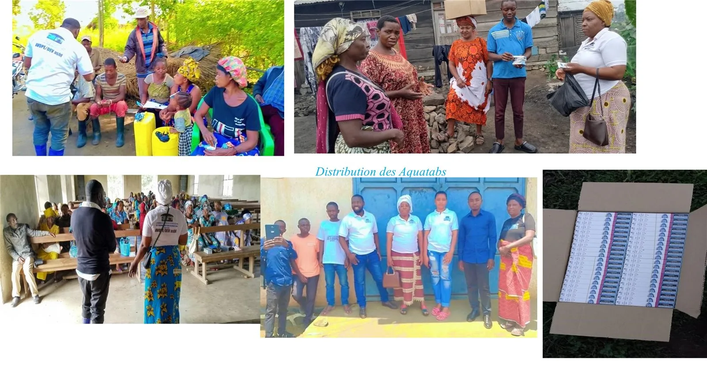
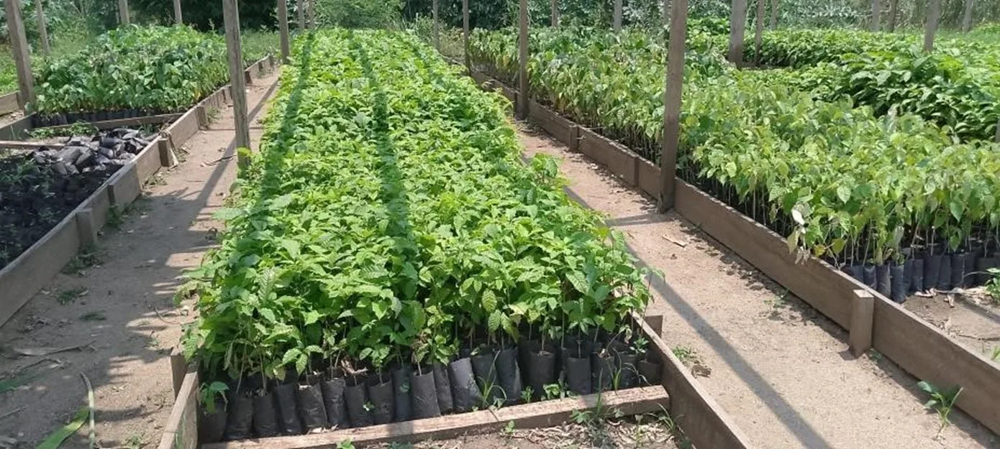
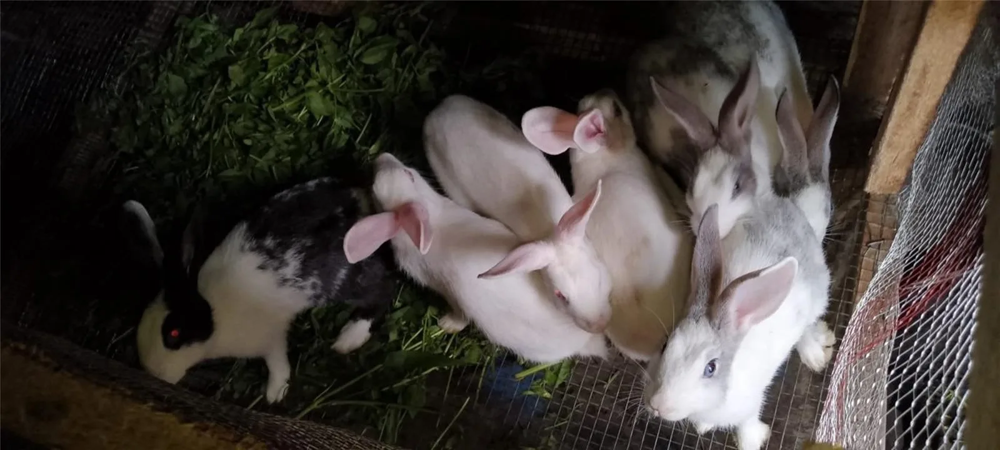

Nos domaines d’intervention
Agir sur les causes, renforcer les capacités
Les interventions d’AVOPEDEV relient environnement, santé, alimentation, protection, gouvernance et économie pour construire des réponses durables avec les communautés.
Une approche intégrée
Six champs d’action complémentaires
Chaque domaine répond à des besoins documentés et s’appuie sur la participation des populations concernées.

Eau, hygiène & assainissement
Prévention des maladies hydriques et amélioration du cadre de vie.
Voir les actions
Environnement & climat
Restauration, reboisement et gestion durable des ressources.
Voir les actions
Sécurité alimentaire & nutrition
Production agricole et renforcement des moyens d’existence.
Voir les actions
Protection & droits humains
Prévention, référencement, alertes et cohésion sociale.
Voir les actions
Gouvernance, paix & citoyenneté
Participation citoyenne, dialogue et prévention des conflits.
Voir les actions
Relance économique & autonomisation
Épargne, entrepreneuriat et résilience économique des ménages.
Voir les actionsEau, hygiène & assainissement
Prévenir les maladies, améliorer les pratiques
AVOPEDEV accompagne les ménages, écoles, marchés et centres de santé dans l’adoption de pratiques d’hygiène plus sûres.
- Lavage des mains aux moments critiques
- Traitement et conservation de l’eau de boisson
- Utilisation et entretien des latrines
- Gestion des déchets ménagers
- Prévention du choléra, de la diarrhée et de la typhoïde
- Journées communautaires de salubrité
Environnement & climat
Restaurer et gérer durablement
Face à la dégradation des ressources naturelles, l’organisation agit du reboisement à l’éducation environnementale.
- Production et distribution de plantules forestières
- Promotion des foyers améliorés et de l’agroforesterie
- Collecte et recyclage des déchets plastiques
- Fabrication de pavés écologiques
- Émissions radiophoniques sur le climat et les forêts
- Campagnes d’assainissement à Kasindi et ses environs
Sécurité alimentaire & nutrition
Produire mieux et renforcer les moyens d’existence
AVOPEDEV soutient les producteurs par des intrants adaptés, des formations et un accompagnement technique.
- Semences améliorées de haricot, de maïs et de riz NERICA 4
- Techniques culturales améliorées et résilientes
- Champs-écoles paysans
- Renforcement des organisations paysannes
- Développement de la filière cacao
- Appui à l’élevage et aux activités agricoles
Protection communautaire & droits humains
Prévenir, alerter et accompagner
Les actions de protection s’appuient sur les leaders, les mécanismes locaux et le référencement vers les structures spécialisées.
- Prévention des violences basées sur le genre et des abus
- Référencement des survivantes vers les services adaptés
- Monitoring de protection et remontée des alertes
- Sensibilisation aux droits fondamentaux
- Formation des leaders communautaires
- Dialogues communautaires et médiation locale
Gouvernance, paix & citoyenneté
Faire vivre la participation locale
AVOPEDEV contribue au dialogue entre citoyens et institutions ainsi qu’à la prévention des conflits communautaires.
- Participation à l’élaboration du budget du secteur Ruwenzori
- Vulgarisation des budgets des entités territoriales
- Redevabilité et suivi citoyen de l’action publique
- Sensibilisation au civisme fiscal
- Dialogues et rencontres intercommunautaires
- Prévention des conflits fonciers et communautaires
Relance économique & autonomisation
Renforcer l’autonomie des ménages
Les initiatives économiques favorisent l’épargne, l’entrepreneuriat et la capacité des familles vulnérables à faire face aux chocs.
- Accompagnement des Associations Villageoises d’Épargne et de Crédit
- Éducation financière, épargne et crédit
- Formation à la gestion des fonds
- Soutien aux activités génératrices de revenus
- Autonomisation économique des femmes
- Appui à l’accès aux marchés et aux voies de desserte
Du domaine à l’action